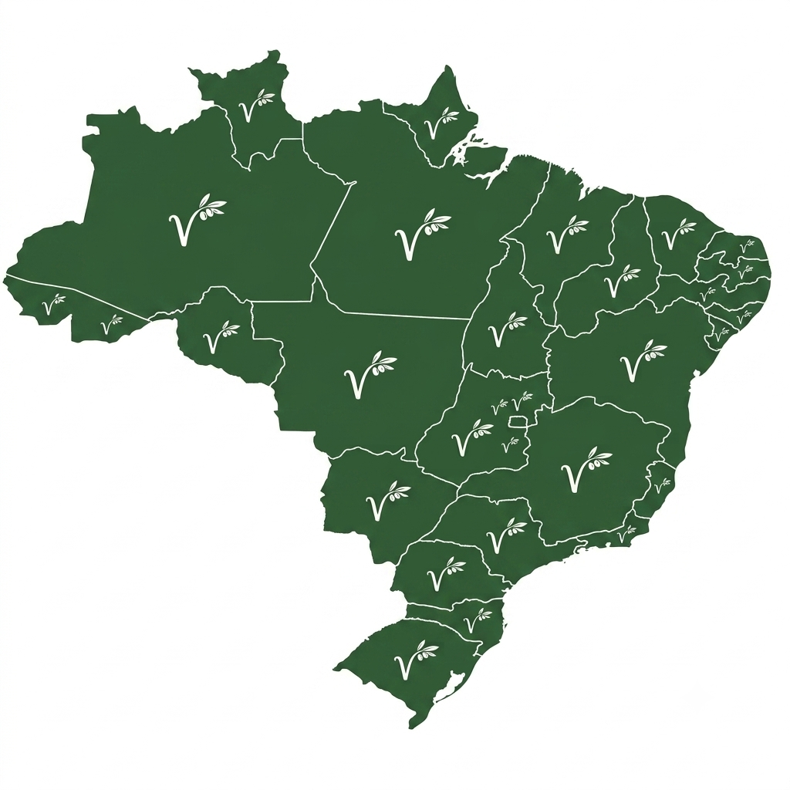

Transformando óleo usado em soluções sustentáveis.
Transformando óleo usado em soluções sustentáveis.
Reciclamos óleo de cozinha usado, transformando um resíduo poluente em diversos produtos úteis para a sociedade.
Nossa missão é reduzir a poluição causada pelo descarte incorreto do óleo de cozinha, incentivando a reciclagem e a preservação dos recursos naturais.

Relaxamento puro com óleos vegetais e essenciais. Alivie tensões e cuide do corpo.

Aromas que abraçam. Transforme qualquer ambiente com aconchego.

Louça limpa e brilhando, com respeito ao planeta. A força da limpeza com origem sustentável.

Tradição e sustentabilidade em cada barra. Limpeza poderosa para roupas e utensílios.

Roupas limpas, cheirosas e com menos impacto. Performance que cuida das fibras e do planeta.

Potência contra a gordura. Limpeza pesada com uma origem leve.

Brilho, hidratação e proteção. O cuidado que seu couro merece, com origem sustentável.

Cor e proteção com base sustentável. Acabamento superior com matéria-prima reaproveitada.

Energia limpa a partir de um resíduo. Potência térmica com menor emissão.

Sua casa limpa e o meio ambiente agradecem. A força da natureza na sua rotina.

Desempenho e proteção com consciência ecológica. Movimento sem atrito e sem culpa.

Pura hidratação e versatilidade. Um ativo natural para cosméticos e indústria.
Ao escolher nossos produtos, você garante máxima eficiência para sua rotina enquanto se torna parte ativa da preservação dos nossos rios e oceanos.
Feito a partir do reaproveitamento inteligente do óleo de cozinha. Limpeza e cuidado sem agredir a natureza nem poluir os rios.
Fórmulas concentradas que removem a gordura mais difícil com alto rendimento. Tão eficiente quanto as marcas convencionais!
Produtos suaves e livres de compostos tóxicos agressivos ou derivados nocivos de petróleo. Seguro para toda a sua casa.
Preço justo, alta durabilidade no uso diário e apoio direto à economia local sustentável.
Faça seu pedido diretamente pelo nosso atendimento e receba em sua região!
Fazer Pedido no WhatsApp
Apenas 1 litro de óleo de cozinha descartado incorretamente pode contaminar milhares de litros de água.
Ao armazenar o óleo usado e destiná-lo a pontos de coleta, você ajuda a preservar rios, reduzir a poluição
e contribuir para a produção de novos produtos sustentáveis, como sabão, biodiesel, velas e cosméticos.
Pequenas atitudes fazem uma grande diferença para o meio ambiente.
Nosso principal projeto atual prevê a instalação de pontos de coleta e revenda anexos às prefeituras
e entidades municipais parceiras em todo o país.
Objetivos do Projeto:
• Acessibilidade: Facilitar o descarte correto do óleo de cozinha e derivados para toda a comunidade.
• Impacto Ambiental: Reduzir drasticamente o lançamento de resíduos poluentes nos rios e mananciais.
• Economia Circular: Fomentar a reciclagem e a transformação do óleo em novos produtos sustentáveis.
